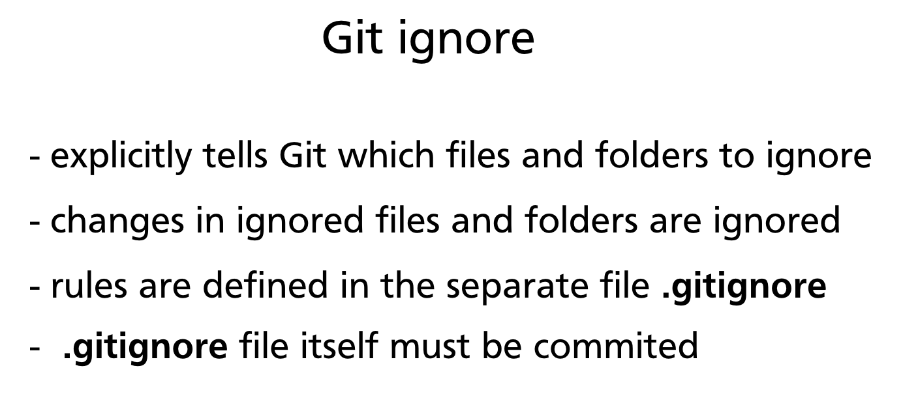
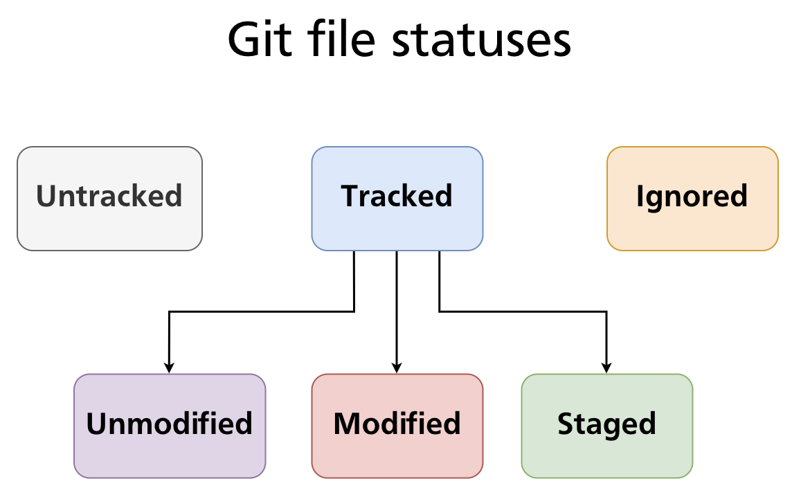
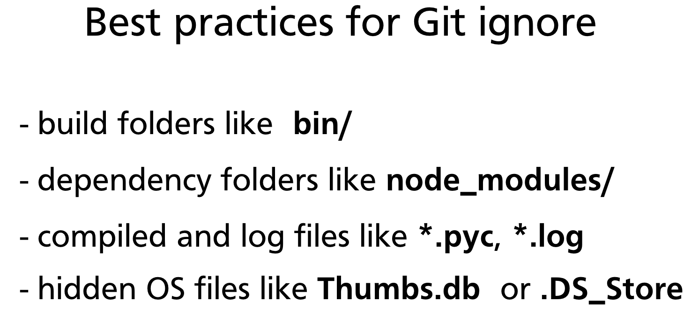

Chapter 07 — Ignoring Files (.gitignore)
Not every file in a project folder belongs in version control. Build artefacts, dependency trees, compiled outputs, log files, and secrets should stay out of the repository — they are either reproducible, too large, or dangerous to share. Git provides a simple, powerful mechanism for this: the .gitignore file.

What .gitignore Does
A .gitignore file explicitly tells Git which files and directories to ignore. Files matching patterns in .gitignore are treated as if they do not exist from Git's perspective:
- They will not appear as Untracked in
git status. - They cannot be staged with
git add. - They will never be included in a commit.
The .gitignore file itself is a plain text file that must be committed to the repository so the same rules apply to every contributor on every machine.

Creating a .gitignore File
Create the file at the root of your repository:
Then open it in any text editor and add your patterns — one per line. Stage and commit it like any other file:
Pattern Syntax
.gitignore uses a glob-style pattern language. Understanding it fully prevents surprises.
Literal filenames
Matches any file with exactly that name, anywhere in the repository tree:
Wildcards
| Pattern | Matches |
|---|---|
* |
Any sequence of characters, not including / |
? |
Any single character, not including / |
** |
Any path component, including / (matches across directories) |
*.log # all .log files anywhere
*.py[cod] # .pyc, .pyo, .pyd files
**/logs/ # any folder named logs at any depth
doc/**/*.txt # all .txt files under doc/ at any depth
Directory patterns
A trailing slash restricts the pattern to directories only:
build/ # ignore the build/ directory and everything inside it
node_modules/ # ignore Node.js dependencies
.venv/ # ignore Python virtual environment
Without the trailing slash, build would also match a file literally named build.
Negation
A leading ! re-includes a file that was excluded by an earlier pattern:
Negation patterns must appear after the pattern they override — order matters. Note that you cannot re-include a file inside an ignored directory; once a directory is ignored, its contents cannot be un-ignored.
Anchoring to the repository root
A leading / anchors the pattern to the repository root, preventing it from matching in subdirectories:
/TODO # ignores only /TODO at the root, not src/TODO
*.env # ignores .env anywhere in the tree
/.env # ignores only /.env at the root
Comments
Lines beginning with # are comments:
Pattern precedence
Within a single .gitignore file, later rules override earlier ones. Across multiple .gitignore files at different directory levels, the file closest to the matched path takes precedence.
Further reading: gitignore pattern format — Git documentation
Common Ignore Categories
These categories cover the vast majority of what should be excluded from most projects.

Build output
bin/
dist/
build/
out/
target/ # Java/Rust build output
*.class # Java compiled bytecode
*.o # C/C++ object files
*.a # static libraries
Dependency folders
node_modules/ # Node.js
vendor/ # Go, PHP (Composer)
.venv/ # Python virtual environments
venv/
__pycache__/
*.pyc
*.pyo
Log and temporary files
Operating system metadata
Editor and IDE files
# JetBrains (IntelliJ, PyCharm, WebStorm, etc.)
.idea/
# Visual Studio Code
.vscode/
# Eclipse
.project
.classpath
.settings/
# Xcode
*.xcworkspace
Secrets and local configuration
Important: Once a secret is committed to a repository — even briefly — it should be considered compromised. Rotate the credential immediately.
.gitignoreonly prevents future commits; it does not erase history.
gitignore Scopes
There are four places Git looks for ignore rules, evaluated in order:
| Scope | File location | Tracked? | Applies to |
|---|---|---|---|
| Repository | <repo-root>/.gitignore |
Yes | All contributors |
| Subdirectory | <subdir>/.gitignore |
Yes | Files within that subtree only |
| Global | ~/.gitignore_global (configurable) |
No | All repos on your machine |
| Local | <repo-root>/.git/info/exclude |
No | Your machine only, this repo |
Setting up a global .gitignore
Use this for personal IDE files or OS metadata that you do not want to commit to every repository:
# Create the file
touch ~/.gitignore_global
# Tell Git where it is
git config --global core.excludesFile ~/.gitignore_global
Then add your machine-specific patterns to ~/.gitignore_global. Your team's repositories stay clean without those rules appearing in the project's tracked .gitignore.
Ignoring an Already-Tracked File
Adding a pattern to .gitignore does not retroactively ignore files that Git is already tracking. If a file was committed before the ignore rule was added, Git will continue to track and show changes to it.
The correct process to stop tracking a file:
# Step 1 — remove from tracking (keeps the file on disk)
git rm --cached secrets.env
# Step 2 — add the pattern to .gitignore
echo "secrets.env" >> .gitignore
# Step 3 — commit both changes together
git add .gitignore
git commit -m "Stop tracking secrets.env; add to .gitignore"
After this commit, secrets.env remains on disk but Git ignores all future changes to it.
Cross-reference:
git rm --cachedis covered in detail in Chapter 06 — Tracking Files & File States.
Using gitignore Templates
Starting from scratch is rarely necessary. GitHub maintains a curated collection of .gitignore templates for hundreds of languages, frameworks, and tools:
- github.com/github/gitignore — the authoritative template repository
- When creating a new repository on GitHub, you can select a
.gitignoretemplate from a dropdown — it is pre-populated for your chosen language
Many code editors also generate an appropriate .gitignore automatically when you create a new project (e.g., create-react-app, dotnet new, cargo new).
Practical Example
The following example sets up a Node.js project and applies an appropriate .gitignore.
Project structure after npm install
my-app/
├── src/
│ └── index.js
├── node_modules/ ← should be ignored (hundreds of MB)
├── .env ← should be ignored (secrets)
├── package.json
└── package-lock.json
Create the .gitignore
cat > .gitignore << 'EOF'
# Dependencies
node_modules/
# Environment variables
.env
.env.local
# Build output
dist/
build/
# Logs
*.log
npm-debug.log*
# OS metadata
.DS_Store
Thumbs.db
EOF
Verify with git status
git status
# On branch main
# Untracked files:
# .gitignore
# package.json
# package-lock.json
# src/
#
# nothing added to commit but untracked files present
node_modules/ and .env no longer appear — Git is ignoring them. Stage and commit the relevant files:
Check whether a specific file is ignored
git check-ignore -v node_modules/lodash/index.js
# .gitignore:2:node_modules/ node_modules/lodash/index.js
git check-ignore -v shows which rule in which file caused the match — invaluable for debugging unexpected ignore behaviour.
Summary
.gitignoretells Git which files and directories to exclude from tracking, staging, and committing.- The file uses glob patterns:
*,?,**, trailing/for directories,!for negation, leading/to anchor to the repo root. - Commit
.gitignoreto the repository so all contributors share the same rules. - Use a global
.gitignore(~/.gitignore_global) for personal machine-specific exclusions. .gitignoreonly affects untracked files — usegit rm --cachedto stop tracking a file that was already committed.- Start from a template at github.com/github/gitignore rather than writing rules from scratch.
Previous: Chapter 06 — Tracking Files & File States · Next: Chapter 08 — Undoing Changes